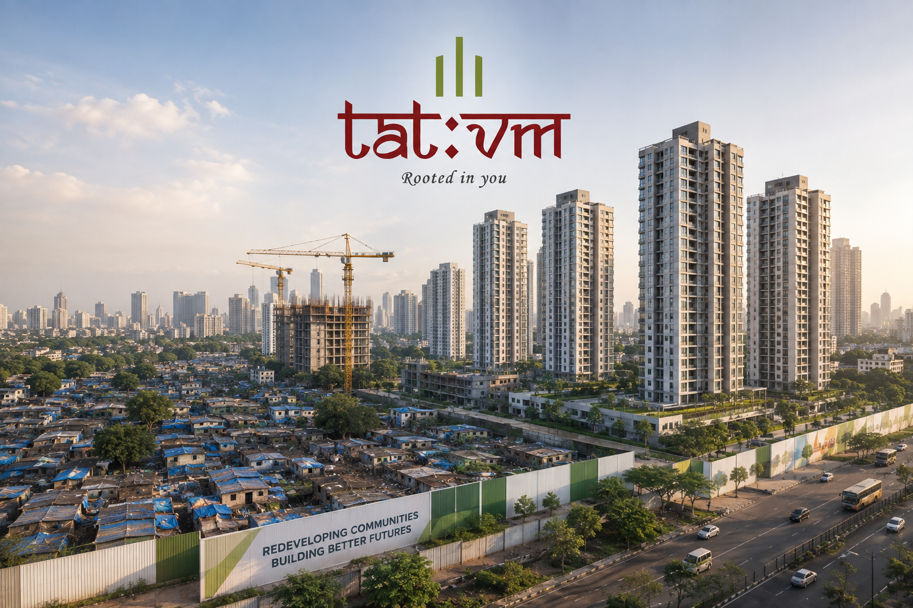

Mumbai Slum Redevelopment: Complete Guide to SRA Projects

Mumbai slum redevelopment is a government-backed urban renewal process where informal settlements are demolished and replaced with permanent, planned housing, giving slum dwellers free homes while allowing developers to recover costs through the sale of market-rate units on the same plot.
The Slum Rehabilitation Authority (SRA), established in 1995, oversees every step of this process, from land eligibility to final possession. If you live in a slum pocket, own land in a redevelopment zone, or are looking to partner with SRA builders in Mumbai, this guide covers everything you need to know before making a move.
What Is the Slum Rehabilitation Authority (SRA) and Why Does It Exist?
The Slum Rehabilitation Authority is a statutory body set up by the Maharashtra government under the Maharashtra Slum Areas (Improvement, Clearance and Redevelopment) Act, 1971. Its headquarters in Bandra, Mumbai, functions as the planning and regulatory authority for all slum redevelopment proposals within the Brihanmumbai Municipal Corporation (BMC) limits.
Before the SRA existed, slum dwellers in Mumbai faced forced evictions and resettlement to distant peripheries, often losing their livelihoods along with their homes. The SRA model changed this fundamentally. Instead of displacing people, it brings redevelopment to where residents already live.
The mechanism is straightforward: eligible slum residents receive a permanent flat at no cost. Developers recoup their investment by constructing and selling "free sale" units on the same plot. The government provides extra Floor Space Index (FSI) and Transfer of Development Rights (TDR) as financial incentives to make the math work. It's a public-private partnership model that, when executed well, benefits all three stakeholders: the residents, the builder, and the city.
You can find the official SRA project database, scheme approvals, and beneficiary lists on the SRA's official website.
How Does Mumbai Slum Redevelopment Actually Work? A Step-by-Step Breakdown
Understanding the process is the first step whether you're a slum cooperative, a landowner, or a developer evaluating an SRA project.
Step 1: Consent from Slum Residents
No redevelopment can begin without the consent of the slum community. Under current SRA rules, a developer must secure the agreement of at least 51% of eligible slum dwellers before submitting a formal proposal. This consent is formalised through individual agreements called "Development Agreements" signed with each eligible resident.
Without this social consent, the entire project stalls. Reputed SRA builders in Mumbai invest heavily in community engagement at this stage, holding town halls, addressing concerns about transit accommodation, and clearly explaining what residents will receive.
Step 2: Biometric Survey and Eligibility Verification
Once consent is secured, a biometric survey identifies who qualifies for a free rehabilitation flat. The eligibility cutoff date matters here. Residents must prove they occupied the slum before the government's specified cutoff date. SRA officers verify this through documents like ration cards, voter IDs, electricity bills, or school records.
This step is critical and often the most contentious part of the process. The government's survey mechanism has recently been strengthened to prevent fraudulent claims and protect genuine residents.
Step 3: Slum Declaration and IOA
The SRA formally declares the area a slum under the relevant provision of the Act. The developer then submits building plans for both the rehabilitation component (free flats for residents) and the free-sale component (market-rate units that fund the project). Upon approval, the SRA issues the Intimation of Approval (IOA), the green signal to begin construction.
Step 4: Transit Camp Accommodation
While demolition and construction happen, eligible residents move into transit camps arranged by the developer. The developer is legally required to provide rent or free transit accommodation throughout the construction period. Timelines matter here: delays in construction directly burden residents in transit.
Step 5: Possession of Rehabilitation Flats
Once the rehabilitation building receives an Occupation Certificate (OC), residents move into their new homes. Each eligible slum dweller receives a 1 BHK flat with a minimum carpet area of 300 sq. ft., free of cost. Ownership documents are issued under the resident's name, giving them formal title for the first time.
What Are the Benefits for SRA Builders in Mumbai?
The SRA model only works because it gives developers a real financial incentive. Here is what SRA builders in Mumbai actually gain from undertaking these projects.
Higher FSI Allowances
Developers building under SRA schemes receive significantly higher FSI than what standard residential construction permits. This extra buildable area is what makes the numbers viable — the free sale component generates revenue that covers the cost of constructing and handing over free flats.
Transfer of Development Rights (TDR)
If the free sale area alone doesn't cover costs, developers receive TDR certificates. These can be used on other plots in Mumbai or sold in the open market, providing additional revenue. The Maharashtra government's TDR regulations govern how and where TDR can be applied.
Faster Approvals Through Single-Window Clearance
SRA projects enjoy expedited processing compared to standard real estate development. The SRA acts as the single planning authority, reducing the number of separate approvals a builder needs to chase across multiple departments.
Premium Location Access
Many of Mumbai's most centrally located plots are slum pockets. SRA redevelopment is often the only legal pathway a developer has to build on these prime parcels in areas like Dharavi, Goregaon, Ghatkopar, and parts of South Mumbai.
At Tatvm Group, our approach to SRA redevelopment goes beyond the financial calculus. We believe that every project must leave the neighbourhood better than we found it, in design, in infrastructure, and in community wellbeing.
What Are the Eligibility Criteria for Slum Dwellers?
Not every person living in a Mumbai slum automatically qualifies for a free flat under SRA schemes. The eligibility rules are specific and non-negotiable.
The Cutoff Date Requirement
Slum dwellers must prove occupation of their structure before the government's prescribed cutoff date. This date is established through official notifications and applies uniformly across all schemes.
Valid Proof of Residence
Acceptable documents typically include ration cards, voter ID, utility bills, school admission records, and government-issued certificates. The SRA conducts physical surveys and document verification before finalising the eligibility list.
One Flat Per Family
Each eligible family receives only one rehabilitation flat, regardless of how many structures they may have occupied. Sub-tenants and illegal encroachers who moved in after the cutoff date are not entitled to a free flat.
Consent to the Scheme
Residents who refuse to sign a development agreement are typically not eligible to obstruct the project if the required consent threshold has already been crossed. However, disputes are common and often end up before the Bombay High Court.
What Is the Latest Mumbai Slum Redevelopment Update?
Maharashtra's housing policy landscape changed significantly. The state government launched "Majhe Ghar, Majha Adhikar" on May 20, 2025, introducing several structural reforms to the SRA framework.
Cluster Redevelopment Is Now the Priority
Instead of piecemeal single-slum projects, the new policy promotes redeveloping entire wards at once, multiple slum clusters rehabilitated through integrated planning. This approach creates better roads, parks, and social infrastructure rather than isolated high-rises surrounded by still-degraded surroundings.
CSR Funds Can Now Finance SRA Projects
Corporate Social Responsibility money, previously restricted in how it could be applied to real estate, can now go into slum rehabilitation. The Maharashtra government has allocated a dedicated fund, the MahaWas Niwas Nidhi, specifically for creating slum-free cities, opening new capital channels for projects that were previously stuck due to financing gaps.
Central Government Land Unlocked
Joint ventures between the central government and SRA can now use central government-owned land for rehabilitation, substantially expanding the supply of viable sites and reducing the dependence on developer-funded transit camps on crowded private plots.
FSI Benefits Extended to Common Areas
Under the new policy, areas like parking, staircases, lifts, and lobbies are included in FSI calculations, an incentive that directly encourages builders to construct higher-quality buildings with proper amenities rather than cutting corners to maximise saleable area.
Developers and residents should track updates directly on the SRA official portal as implementation rules continue to evolve.
How Long Does Slum Redevelopment Usually Take in Mumbai?
This is the question every resident asks, and the honest answer is: longer than the law intends.
By regulation, an SRA project should move from IOA to possession in approximately 3 to 5 years. In practice, delays are common. A 2024 Bombay High Court ruling, while terminating a developer's appointment for a 20-year-old stalled project, noted that the delay had practically written off an entire generation of residents waiting for their homes.
Delays typically stem from:
- Disputes over eligibility lists and consent percentages
- Litigation by non-consenting residents or external parties
- Developer financing failures mid-construction
- Regulatory amendments that require plan revisions
- Infrastructure bottlenecks affecting utility connections
When choosing an SRA builder in Mumbai, residents should prioritise developers with a demonstrable track record of completing projects, not just starting them. Ask for Occupation Certificates on past SRA buildings, not just brochures.
At Tatvm Group, we are upfront about timelines and structured our project delivery around financial safeguards that prevent mid-stream stalls, because a stalled project doesn't just delay a building; it displaces lives.
Key Risks in Mumbai Slum Redevelopment (and How to Protect Yourself)
For Residents
The most significant risk is developer abandonment. A builder collects consent, demolishes the slum, moves residents to transit camps, and then runs out of money or interest. Residents are then left in limbo for years. To protect yourself:
- Ensure the developer has a completed SRA project in their portfolio
- Verify that the IOA has been issued by the SRA before vacating your home
- Register your development agreement with the Sub-Registrar's office
- Demand clarity on who provides transit accommodation and for how long
For Developers
The primary risks are consent fraud, litigation from ineligible claimants, and TDR market volatility. Sound due diligence on eligibility verification, community relations, and legal title on the land reduces these materially.
For Buyers of Free Sale Units
SRA projects produce both rehabilitation flats and free sale market apartments. Buyers of the latter should verify that the building's OC covers the free sale wing, that the RERA registration is valid, and that no court stay orders exist on the project. You can cross-check RERA status on Maharashtra RERA's official portal.
Why the Right Builder Matters More Than the Project Location
In SRA redevelopment, the builder is the single most consequential variable. The land is fixed. The residents are fixed. What varies entirely is whether the developer has the governance, financial depth, and community orientation to see a complex multi-year project through.
Tatvm Group was founded with a clear position on this: we build for communities, not just for returns. Our redevelopment expertise spans both the regulatory and human dimensions of SRA projects, from navigating IOA timelines to designing rehabilitation buildings that residents are proud to call home, not just relieved to move into.
If you're a housing cooperative or landowner looking to explore redevelopment possibilities, we welcome a direct conversation — no pressure, no jargon, just an honest assessment of what your project could look like and what it would take.
Conclusion
Mumbai slum redevelopment is one of the city's most complex and consequential policy instruments. Done right, it gives millions of families dignified homes, transforms underserved neighbourhoods, and creates urban land that works for everyone. Done poorly, it displaces the very people it's meant to protect.
The difference between those two outcomes usually comes down to who is developing the project and how committed they are to seeing it through. If you're a housing society, cooperative, or landowner exploring redevelopment in Mumbai, the first step is an honest conversation with builders who understand both the regulatory framework and the human stakes involved. Reach out to the Tatvm Group team to discuss what redevelopment could look like for your property.
Frequently Asked Questions
1. What is Mumbai slum redevelopment?
Mumbai slum redevelopment is a government-regulated process where informal slum settlements are replaced with permanent planned housing. Eligible slum dwellers receive free flats, while private developers fund construction by selling market-rate units on the same plot. The Slum Rehabilitation Authority (SRA) governs the process end-to-end under the Maharashtra Slum Areas Act, 1971.
2. How can I check SRA project details in Mumbai?
You can check SRA project approvals, beneficiary lists, and scheme status directly on the official SRA website at sra.gov.in. The portal lists all approved projects, their IOA numbers, and the developer assigned. For RERA-related checks on free sale components, visit maharera.mahaonline.gov.in.
3. What is the Slum Rehabilitation Authority (SRA) in Mumbai?
The Slum Rehabilitation Authority is a statutory body established by the Maharashtra government in 1995. It acts as the planning and regulatory authority for all slum redevelopment projects within Mumbai's BMC limits. It issues Intimation of Approvals, conducts eligibility surveys, and oversees the handover of rehabilitation flats to eligible residents.
4. What is the latest Mumbai slum redevelopment update?
As of 2025, the Maharashtra government launched the "Majhe Ghar, Majha Adhikar" housing policy (May 2025), which introduced cluster redevelopment across full wards, allowed CSR funds for slum rehabilitation, opened central government land for SRA joint ventures, and extended FSI benefits to common areas like parking and lifts to improve building quality.
5. How many years does slum redevelopment usually take in Mumbai?
Officially, SRA projects are expected to be completed in 3 to 5 years from the date of Intimation of Approval. In practice, many projects face delays due to resident disputes, developer financing issues, or litigation. Some stalled projects have stretched for over a decade. Selecting a developer with a verified track record of completed SRA projects is the most reliable way to assess realistic timelines.